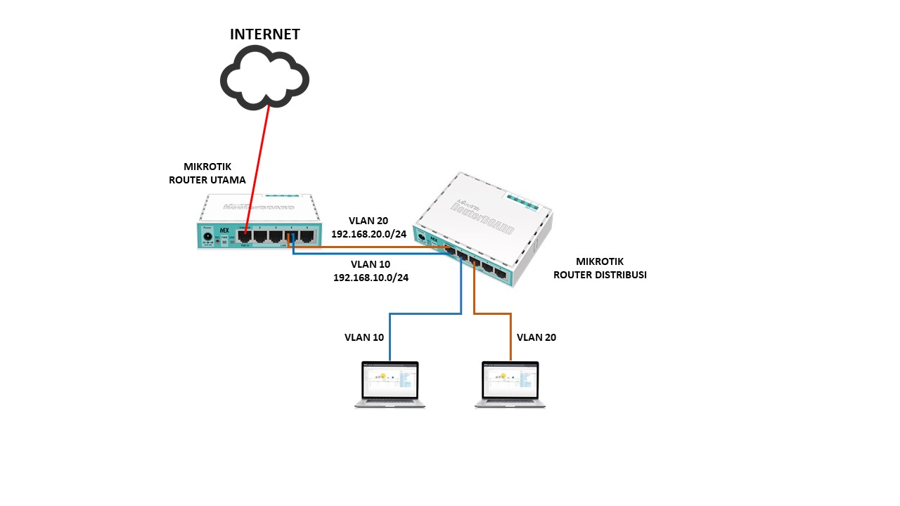

STEPS TO CREATE A SIMPLE VLAN

Let's start....
-
1.connect the laptop and one mikrotik using a UTP cable
-
2.Setting the first mikrotik to be a router
-
3. Open the Winbox application on the laptop
-
4. After that, set the DHCP client on Toll IP
- 5. Then also set the DHCP server
- 6. create vlan 10 and 20 with the names of the teacher and student
-
7.then set the second proxy to be a switch
-
8.Briggs settings
finished